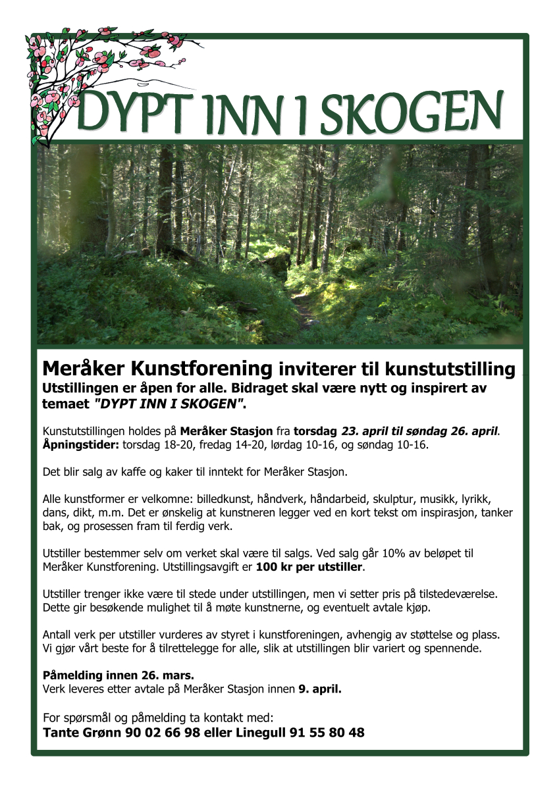
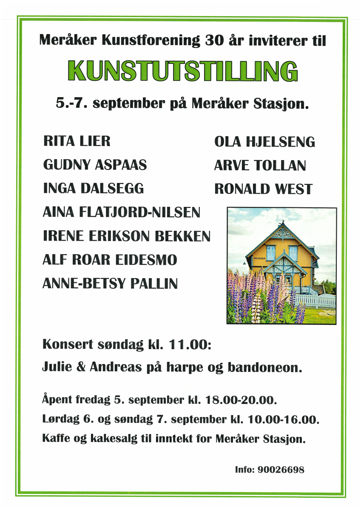
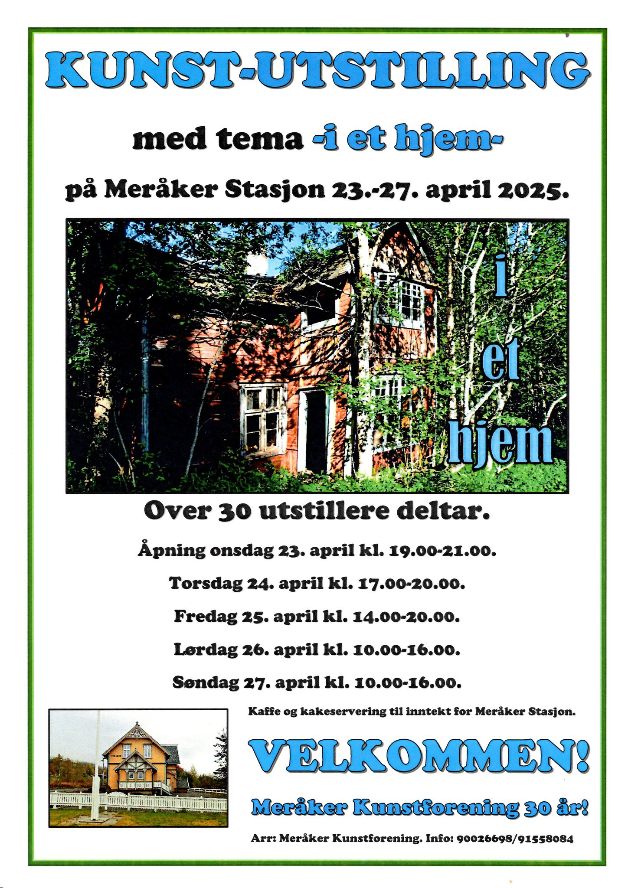

Meråker kunstforening arrangerer minst en årlig felles kunstutstilling hvor alle våre medlemmer kan stille ut arbeidene sine. Noen år arrangerer vi også flere fellesutstillinger, samt utstillinger for individuelle kunstnere.
Utstilling 23.-26. april 2026.

Deltakere: Gunn Turid Jørgensen, Tetiana Hliadchenko, Jova Nordstrøm, Meråker Kulturskole, Lill Kristin Brenntrø, Cathrine Ånstad Arntsen, Anders Gjesdal Oliversen, Linda Brenntrø, Line Merete Dalsplass Aursand, Kathrine Høttmon, Jon Einar Visser, Tilda Harju, Ørnulf Ånstad, Frida Norstrøm, Frode Fredriksen, Silje Ven Nesgård, Anastasia Diachenko, Ina Krasnovska-Kaftan, Gunn Merethe Prytz, Kirsti Reppe, og Carolien ten Bosch.
Utstilling 5.-7. september 2025.

Deltakere: Rita Lier, Ola Hjelseng, Gudny Aspaas, Arve Tollan, Inga Dalsegg, Ronald West, Aina Flatjord-Nilsen, Irene Erikson Bekken, Alf Roar Eidesmo, Anne-Betsy Pallin.
Utstilling 23.-27. april 2025.

Deltakere: Gunn Turid Jørgensen, Hege Christin Berg Samdahl, Elise Christiane Berg Kjølaas, Øivind Killengren, Tetiana Hliadchenko, Jova Nordstrøm, Tone Henriksen, Meråker Kulturskole, Else Fagerheim, Lill Kristin Brenntrø, Cathrine Ånstad Arntsen, Ve Wolff, Lena Karalar, Liv Randi Raavand, Jon Stormo, Anders Gjesdal Oliversen, Rita Brenntrø, Line Merete Dalsplass Aursand, Kathrine Høttmon, og Jon Einar Visser.
Utstilling 18.-21. april 2024.
Utstilling 27.-30. april 2023.
Utstilling 1.-4. mars 2018.
Utstilling 6.-13. august 2015.
Utstilling 2014.
Utstilling 1.- juni 2010.
Utstilling 25.- august 2007.
Utstilling 2.- juni 2006.
Utstilling 3.-17 juni 2005.
Utstilling 2.-16 mai 2004.
Utstilling 30. juni-13 juli 2003.
Utstilling 10.-17 november 2002.
Utstilling 30. juni-14 juli 2002.
Utstilling 30. juni-15 juli 2001.
Deltakere: Mari Krokann Berge, Grethe Nergaard, Brit Blæstervold, og Per Arne Holmberg.
Utstilling 28. november 2000.
Utstilling 15. juli-13 august 2000.
Utstilling 25. juni 2000.
Utstilling 5.- august 1999.